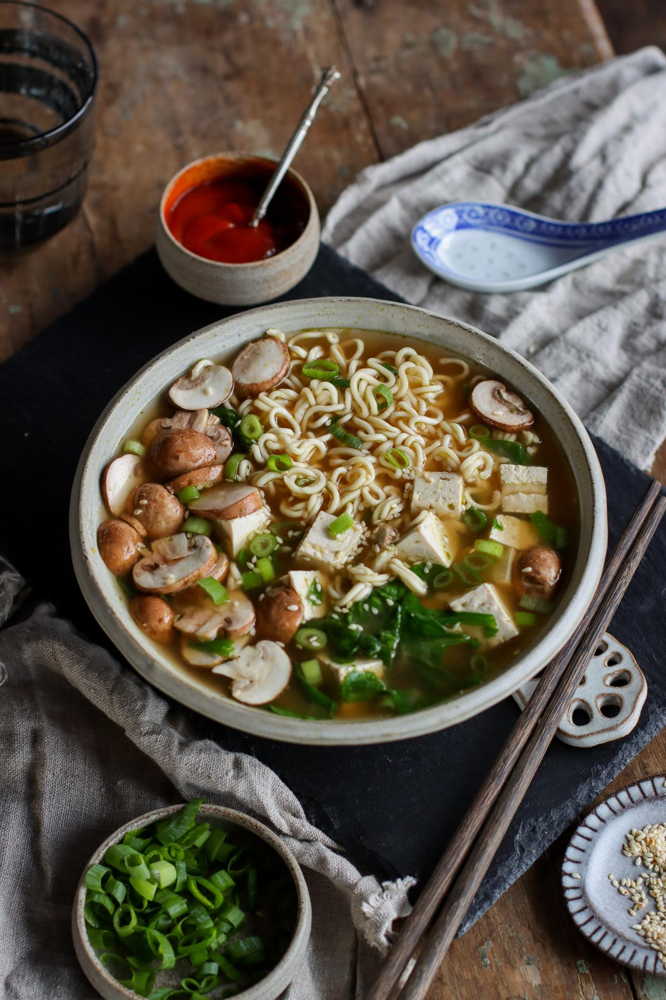

Miso Noodle Soup

Description
This is a big ol' bowl of comforting noodle soup! It's quick too - taking just 5 minutes to prep,
and can be easily taken on-the-go. Just add boiling water on top when ready to eat. That's it!
Ingredients
- 50g quick ramen noodles
- 2 tablespoon miso paste
- 1/2 vegetable bouillon cube
- 80g firm tofu, cut into 1 cm cubes
- 3 button mushrooms, sliced
- 1 stalk green onion, thinly sliced
- 1/2 cup fresh spinach
- 1 1/2 cup boiling water
Steps
- Layer all the ingredients in a bowl or other heat-proof container.
Noodles should go at the bottom, followed by the miso and bouillon cube,
then tofu, green onion and lastly the mushrooms and spinach.
- Pour boiling water into the bowl ensuring that all the ingredients are submerged.
- Cover the bowl and let it sit for about 3-5 minutes, or until teh noodles are cooked.
- Add your garnishes and toppings and enjoy!
Recipe copied from
Pick Up Limes